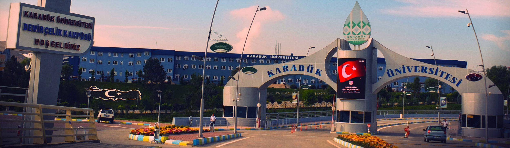
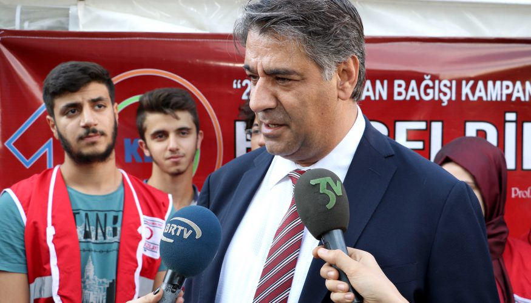
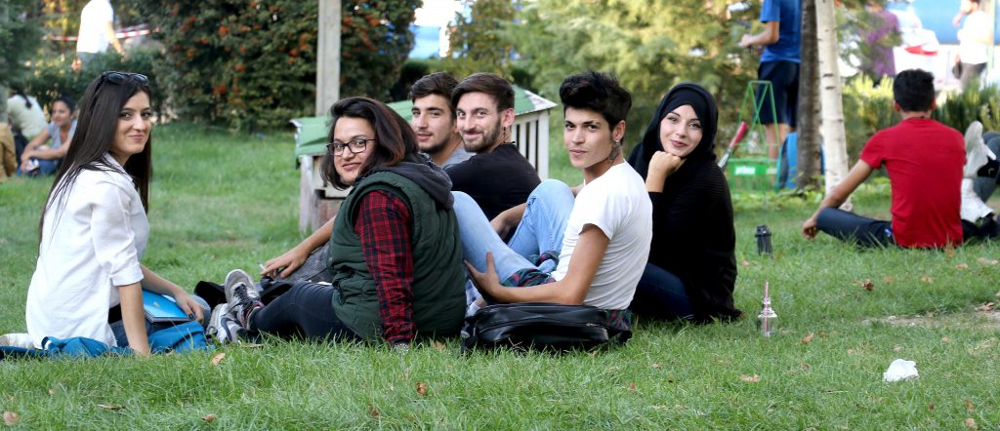
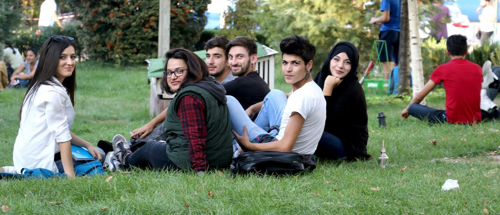

KBU is on the way of being a world university
Rector Prof. Dr. Refik Polat said on our university’s 10th-anniversary events that “Karabük University is in a serious rise by signing important works in the international field. The number of students increased this year as well and reached to 56 thousand and among these 3 thousand six hundred are foreign students.” “We are among the top 5 universities with the most international students in Turkey” Rector Prof. Dr. Refik Polat also said in his remarks that “We aim to turn Karabük into one of the main centers in Turkey in international student dimension. We are among the top 5 universities that hold the most international students among Turkey’s universities. We gradually include international faculty in this. Our friends are working on this issue. Of course, we need to do so to be an international university.”
